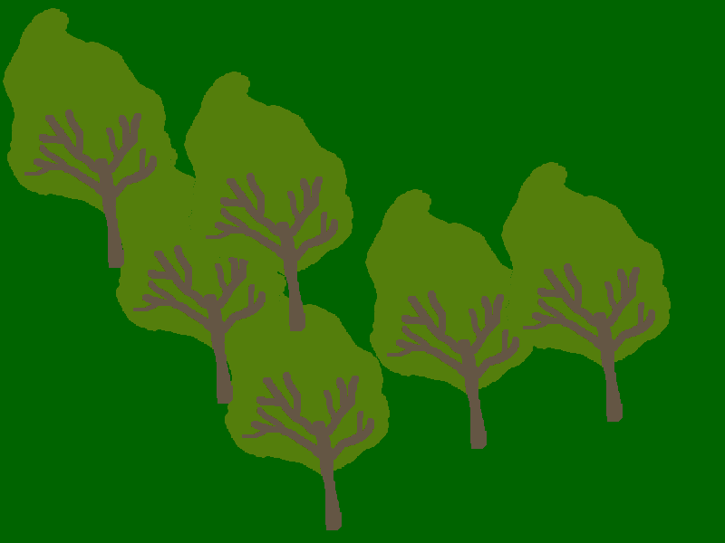

Приказивање готових слика¶
Цртање основних облика може да буде забавно, а понекад је и изазовно. Ипак, било би још забавније да можемо да комбинујемо своје цртање са готовим сликама или фотографијама. У PyGame окружењу то се ради веома једноставно. Погледајмо следећи пример:
У овом програму нове су нам две функције библиотеке PyGame:
Функција
pg.image.loadучитава слику са диска. Овој функцији прослеђујемо име фајла који садржи слику (може се укључити и путања до фајла), а она као резултат враћа слику у облику погодном за програм. Тај резултат треба да сачувамо у некој променљивој (у примеру је то променљива drvo_slika);Функција
prozor.blitприказује слику у датом прозору. Овој функцији прослеђујемо променљиву која садржи слику (резултат функције pg.image.load) и позицију \((x, y)\) у прозору на којој желимо да се слика прикаже. На позицији коју смо задали ће се појавити горњи леви угао слике. У примеру смо задали позицију \((0, 0)\), па се горњи леви угао слике појављује у горњем левом углу прозора.
Испробајте уписивање разних вредности координата уместо \((0, 0)\) да бисте боље разумели како функционише функција blit. Можемо да приметимо да је ово исцртавање врло слично цртању цртежа из више делова помоћу сидра.
Можете да испробате и приказивање једне слике на више места на екрану, као што смо то радили са основним облицима. Довољно је да позовете функцију blit више пута, са различитим вредностима за место приказивања.
Код приказивања слике на више места може доћи до преклапања слика. Зато треба водити рачуна о редоследу приказивања. У нашем случају, прво треба приказати дрво које замишљамо као даље, а затим оно које замишљамо као ближе. У противном коначна сцена може изгледати нелогично, као што показује следећа слика.
{kind=link}
Објекти које доживљавамо као даље су обично у горњем делу слике, што значи да имају мању \(y\) координату, мада ово не мора увек да буде тачно. У овом и у сличним примерима ће бити довољно да се држимо овог једноставног правила: боље је прво приказивати објекте са мањом \(y\) координатом.
Дрвеће¶
У следећем програму поправите редослед позиција дрвећа у листи, тако да редослед исцртавања буде исправан, а затим додајте у петљи наредбу за цртање дрвета на позицији (x, y).
Јабуке¶
Довршите започети програм тако да црта дрво са јабукама (као у примеру).
Покушајте да измените програм тако да приказује дрво са јабукама померено 100 пиксела десно и 50 пиксела ниже.
Шах-мат¶
Напишите програм који црта шаховску позицију, као у примеру. Називи фајлова са сликама празне табле, белог краља, белог топа и црног краља су редом “chess_table.png”, “white_king.png”, “white_rook.png”, “black_king.png”.
Воћњак¶
У следећем задатку је започето цртање воћњака. Ако покренемо програм (дугме “Покрени програм”), приметићемо неке недоследности. Један проблем је то што се јабуке налазе само на првом дрвету, а треба да се налазе на сваком дрвету, распоређене на исти начин. Осим тога, друго дрво слева (исправно) преклапа крајње лево дрво, али не преклапа његове јабуке. Потребно је да дрво које приказујемо раније, прикажемо заједно са његовим јабукама пре него што пређемо на следеће дрво.
Исправите програм, тако да приказује слику која се добија кликом на дугме “Прикажи пример”.